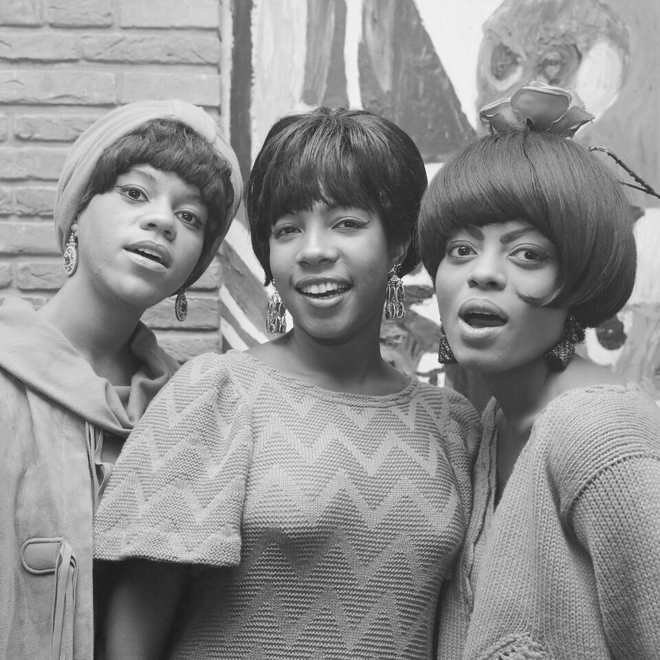

Motown music started with an 800-dollar family loan.
Berry Gordy borrowed it in 1959 and opened a converted house on Detroit's West Grand Boulevard.
Within a decade it was the most successful Black-owned business in America.
Gordy didn't just sign talented singers.
He built an assembly line for hit records, modeled on the Detroit auto plants he'd worked on himself.

Table of Contents
- The Little Label That Out-Hit Everyone
- An Assembly Line Built for Hits
- The Voices That Built Motown Music
- Southern Soul: The Gospel-Fired Answer
- The Long Reach: What It Left Behind
- FAQ
The Little Label That Out-Hit Everyone
Berry Gordy founded his label in Detroit on January 12, 1959.
He borrowed 800 dollars from his family to do it.
He set up shop in a two-story house at 2648 West Grand Boulevard.
A hand-painted sign above the window read "Hitsville U.S.A."
In April 1960 he renamed the company Motown, short for Motor Town, Detroit's own nickname.
Quality Control Meant Something Different Here
Every Friday morning, Gordy gathered the building for a meeting he called Quality Control.
Producers sat next to secretaries and janitors.
Everyone got a vote on which new recordings were good enough to release.
The doors locked two minutes after nine, so latecomers simply lost their say.
Gordy's logic was blunt.
If a song couldn't move an ordinary person in that room, it wouldn't move the public.
At its commercial peak in the mid-to-late 1960s, Motown had the highest hit ratio of any label in history.
An Assembly Line Built for Hits
Gordy had worked a Lincoln-Mercury assembly line before starting the label.
It showed in how he ran things.
He hired in-house songwriters, arrangers, and choreographers and put them on a schedule.
It ran the way a car plant runs a production line.
Make a good record, then make another one like it, fast.
That discipline is a big part of why Motown music sounds so instantly recognizable.
The Funk Brothers: The Band Behind the Curtain
Almost every hit ran through the same studio house band.
They were a rotating cast of more than fifty musicians known as the Funk Brothers.
They played in Studio A, a cramped room the players nicknamed the "snake pit."
Their signature was a driving, melodic bassline under tambourine-heavy backbeats and gospel-style call and response.
They played on nearly every 1960s Motown single.
Even so, the Funk Brothers went uncredited on record labels until the following decade.
The Voices That Built Motown Music
The system only worked because Gordy had extraordinary singers to run through it.
The Supremes, fronted by Diana Ross, turned "Where Did Our Love Go" into one of the decade's biggest pop hits.
The Temptations brought sharp choreography and five-part harmony to songs like "My Girl."
The Four Tops answered with the pleading urgency of "Reach Out I'll Be There."
Marvin Gaye moved from smooth romantic singles into something more personal by decade's end.
Smokey Robinson wrote and sang some of the label's most literate lyrics with the Miracles.
Martha and the Vandellas gave the label its most propulsive dance single with "Dancing in the Street."
A teenage Stevie Wonder was already scoring hits of his own before he turned fourteen.
Southern Soul: The Gospel-Fired Answer
Motown wasn't the only version of 1960s soul.
It wasn't the rawest one either.
Stax, Muscle Shoals, and a Rougher Sound
Labels like Stax in Memphis built a grittier style.
So did studios like Muscle Shoals in Alabama.
Their sound came out of gospel wails, blues grit, and loose, spontaneous studio takes.
Where Motown polished its acts for crossover pop radio, Southern soul kept the church closer to the surface.
Aretha Franklin Finds Her Sound at Atlantic
Aretha Franklin had already spent six years recording for Columbia without a defining hit.
In 1967 she moved to Atlantic Records and cut sessions with Muscle Shoals musicians.
The result was "I Never Loved a Man (The Way I Love You)."
That same year she released her transformative cover of Otis Redding's "Respect."
Those records made her a star.
They also gave Southern soul its definitive voice.
The Long Reach: What Motown and Soul Left Behind
Motown's chart numbers alone are hard to overstate.
Between 1960 and 1969, the label placed 79 songs in the Billboard Hot 100's top ten.
That crossover success did more than sell records.
It put Black artists on mainstream American television and radio at the height of the civil rights era.
White and Black audiences watched the same broadcasts, together.
Southern soul's rawer approach fed forward too.
It ran into funk, into 1970s soul, and into the deep-voiced testifying still heard in R&B today.
Motown itself kept going well past the decade.
It launched The Jackson 5 in 1969, before the label eventually relocated to Los Angeles.
Wedding bands and film soundtracks still lean on the same handful of records today.
That staying power says something few genres from the decade can claim.
Few 1960s sounds left as long a shadow.
Curious which 1960s genre actually fits your taste?
Try the What's Your 60s Sound? quiz, or test your knowledge with the 1960s Music Trivia tool.
FAQ: Motown Music
What is the Motown sound?
The Motown sound blended gospel-rooted call and response with a driving tambourine backbeat.
Melodic basslines came from the label's in-house band, the Funk Brothers, under polished vocal groups and in-house songwriters built for pop radio.
Who founded Motown Records?
Berry Gordy Jr. founded the label in Detroit on January 12, 1959.
He borrowed 800 dollars from his family to start it, then renamed it Motown, short for Motor Town, in April 1960.
What's the difference between Motown and Southern soul?
Motown music aimed for a polished, crossover pop sound built to win over teenage listeners of every race.
Southern soul, made at labels like Stax in Memphis and at Muscle Shoals in Alabama, kept the raw, gospel-wail intensity of the church closer to the surface.
Which artists were part of Motown in the 1960s?
Motown's 1960s roster included The Supremes, The Temptations, The Four Tops, Marvin Gaye, Smokey Robinson and the Miracles, Martha and the Vandellas, and a teenage Stevie Wonder.
The label placed 79 songs in the Billboard Hot 100 top ten between 1960 and 1969.
Why were Motown's Friday quality control meetings important?
Every Friday morning, Berry Gordy gathered staff, from producers down to secretaries, to vote on new recordings.
The doors locked two minutes after the 9 a.m. start.
Gordy's reasoning was simple: if a song couldn't move an ordinary person in that room, it wouldn't move the public.
Every artist above built a catalog deep enough to reward a closer look on its own.
Start with The Supremes or Marvin Gaye for the Detroit side, or Aretha Franklin for where Southern soul went next.
Head back to the 1960smusic.net homepage to explore every other genre that shaped Motown music's decade.